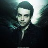

Hayley Nichole Williams, née le 27 décembre 1988 à Meridian (Mississippi), est une chanteuse et auteur-compositeur américaine. Elle est la chanteuse du groupe rock Paramore. Son registre vocal est soprano.
Jeremy Clayton Davis est né le 8 février 1985 à North Little Rock dans l'Arkansas. Il est le bassiste du groupe de musique américain Paramore. Il a commencé à jouer de la musique à l'âge de 11 ans. Il s'est marié le 30 septembre 2011 à Kathryn Camsey, avec qui il est parent d'une fille, Bliss Belle Buttercup Davis, née le 28 décembre 2013 en Angleterre. Il a été influencé (musicalement) par Victor Wooten et Marcus Miller.

Taylor York est un musicien américain, il joue principalement de la guitare rythmique et de la guitare électrique simple. Il est connu pour être officiellement membre du groupe pop-punk Paramore depuis 2009.De son véritable nom Taylor Benjamin York, Taylor York est né à Nashville au Tennessee le 17 décembre 1989 (25 ans). C'est son père, musicien professionnel qui lui apprend à jouer de la guitare ainsi qu'à son frère, Justin York.